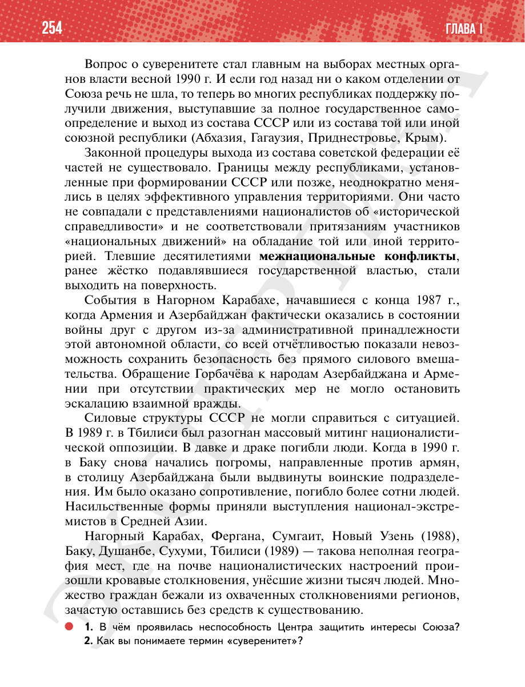

⌂
Мединский.нет
Последнее обновление: 21.08.2026
Мединский.нет
›
История России. 11 класс. Базовый уровень
›
Глава I. СССР в 1945—1991 гг.
›
§ 23. Национальная политика и подъём национальных движений. Распад СССР
›
стр. 255

← стр. 254
Оглавление
стр. 256 →
×